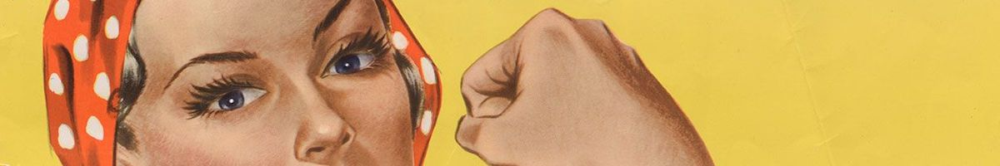

You CRAN do it
2020-02-25

As the @WeAreRLadies curator, I asked the Twitterverse for advice when submitting a package to the Comprehensive R Archive Network (CRAN) for the first time. Many people replied and offer their tips, experience, and well wishes. I have summarized everybody’s replies below. THANK YOU all for participating!
Here’s what to expect when succeeding to get your package on CRAN!
As someone who hopes to submit their first package 📦to CRAN this year… what should I know? 😳
— We are R-Ladies (@WeAreRLadies) February 13, 2020
Read the official CRAN documentation
… which is Writing R Extensions! “Necessary and sufficient,” according to Avraham Adler.
You can get by with a little help from your friends
{usethis}, {devtools}, and {roxygen2}, although not necessary, are useful tools for creating CRAN-ready packages.
Documentation is key
- Have tests and coverage via {covr}, and make sure they run without issues on all platforms
- CRAN will ask that you add examples to your package, wrapped in
\dontrun{}and\donttest{}. - Ask others read your stuff and provide feedback!
Let reviewers know why this should be on CRAN
A quick note letting the reviewers know why your package should be on CRAN goes a long way.
Reviewer asking “why do we need this on CRAN?” isn’t a rejection, just respond politely with a reason.
— Jay Qi (@jayyqi) February 13, 2020
Also, if https://t.co/9Mgm9C20E6 can make it to CRAN, your package belongs there too!
Be patient
The people at CRAN are busy! It might take a while for them to reply and accept your package. If you want to track the progress of your package, you can take a look at the CRAN Incoming Dashboard.
Emails will be terse
This is particularly difficult for me to hear, as someone who provides! ample! exclamation marks! in emails! in order to sound cheery and polite, but responses can be short and to-the-point. Breathe, and address everything mentioned. When you do reply, respond to the CRAN list.
Persist
The reviewers will let you know what you need to do for approval. Go through their list carefully and try again!
Don’t get discouraged if you don’t succeed on your first try. Everyone (including me, my team, and R core) gets rejected from time to time. It sucks, but don’t give up — just make the requested changes and resubmit.
— Hadley Wickham (@hadleywickham) February 13, 2020
Many thanks to the R Community for their words of advice and encouragement ❤
Guides
- Writing R Extensions (Official CRAN Documentation)
- Hadley Wickham and Jenny Bryan’s R Packages
- Julia Silge’s How I Learned to Stop Worrying and Love R CMD Check
- Maëlle Salmon’s Code Examples in R Package Manuals
- R-hub’s Prepare a CRAN submission
- R-hub’s CRAN submission preparation with rhub
- Karl Broman’s Getting Your R Package on CRAN
- Colin Fay’s Preparing your package for a CRAN submission
- Jp Marín Díaz’s How to publish a package to CRAN and From 0 to CRAN in 1 day
- Jim Hester’s Submitting vroom to CRAN, LIVE!
- Ryo Nakagawara’s CRAN Trial(s) and Error(s) and Future Releases
Liked this article? I’d love for you to retweet!
📢 New blogpost 📢 You CRAN Do It: What CRAN First-Timers Should Know 💪a summary of a thread from @WeAreRLadies. Thank you for all your advice and encouragement! https://t.co/BimejGvqdr #rstats pic.twitter.com/0Ygk7qHc76
— Isabella Velásquez (@ivelasq3) February 27, 2020